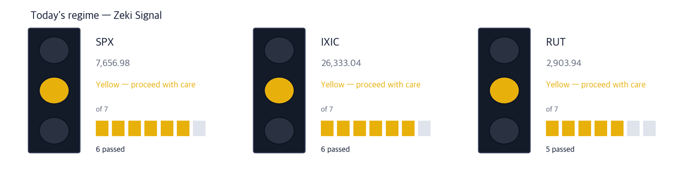
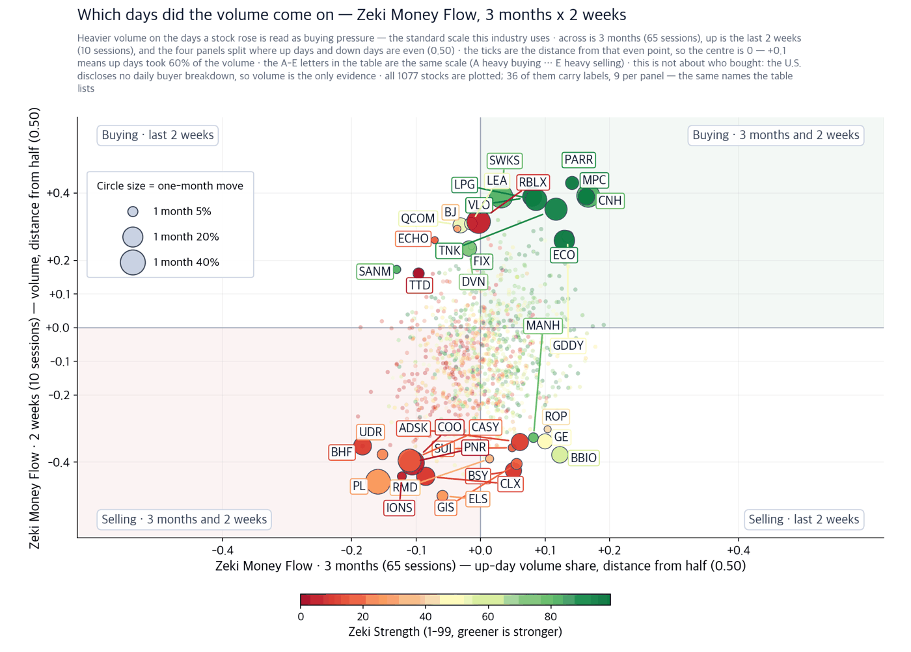
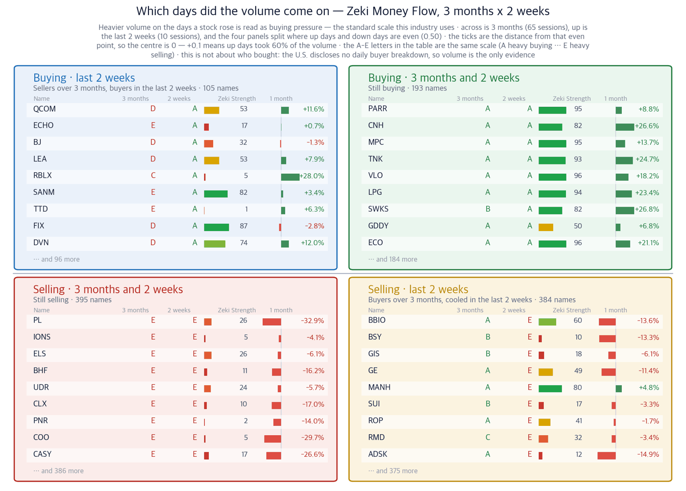
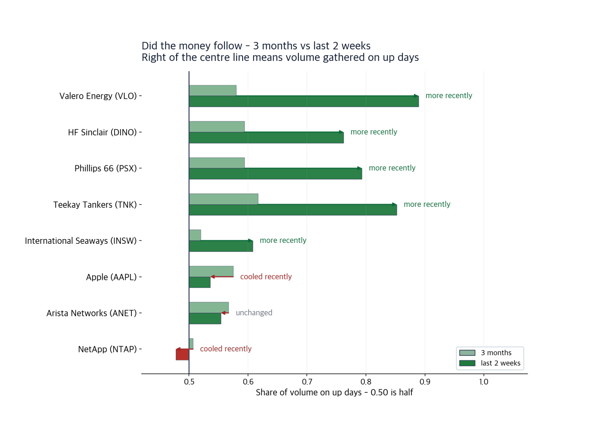

Oil at $100, and what rose was not crude but refining and tankers
ZekiRex US Briefing · Saturday, 12 September 2026 · prices as of the 11 September close
Dow 52,573.29 | Nasdaq 26,333.04 | 10-year 4.975% | WTI crude $100.31 | Zeki Signal Yellow |

How to read this
| Lit lamp | Today's regime. Green means buyers have the edge, yellow means wait, red means no new buys. |
| Filled squares | How many of the 7 conditions passed. More filled means firmer market structure. |
| All filled but not green | Something else pulled the grade down one step. The reason is printed under the lamp. |
Green means buyers have the edge, yellow means wait, red means no new buys. Today the Dow, the Nasdaq and the Russell 2000 are all yellow.
What to do now
Executive summary — three things to check
1. What is short is refined product, not crude.
Saudi Arabia shut its East-West pipeline, a line that carried up to 7 million barrels a day, and Houthi forces took an island and a coastal town on the Bab al-Mandeb strait (WSJ, 12 September, World). Yet the names that rose were not the companies that pump crude. They were the refiners that turn crude into diesel and gasoline, and the tankers that carry it. Exxon Mobil gained 3.9% over the month. Valero Energy gained 18.2% and HF Sinclair 22.6% over the same stretch.
2. Stocks rose even as a rate rise became the base case.
August consumer prices were 3.4% above a year earlier, the same pace as July. The odds of a hike on 16 September are now put at 87%, against 59% a week ago (IBD, 11 September). Shares still rose on Friday, because the argument over whether the Fed would move was settled rather than left open.
3. Networking gear is excluded today.
Several stories on money flowing into AI data centres ran on Friday. Arista Networks rose 5.6% that day and NetApp 8.5%. Both are lower over the month. A one-day bounce pulling against a one-month trend is not enough, so neither is carried as a name today.
So what do we do: The new ground today is refining and tankers. The signal stays yellow until the rate decision on Wednesday.
First, the week in the economy
| Date | What to watch | What it changes |
|---|
| Tue 15 Sep | Empire State manufacturing index | A soft reading raises the cost of a hike |
| Wed 16 Sep | FOMC decision, August retail sales | A quarter-point rise is already in the price. What is not priced is what Chair Kevin Warsh says afterwards |
| Fri 18 Sep | Triple witching, remarks by Governor Bowman | Expiry days add trade that carries no view, so closes move around |
Earnings are thin this week: Forgent Power Solutions, an AI infrastructure name, and the homebuilder Lennar.
Why the market moved
Themes and names — only where the prices actually followed
Theme 1. The shortage is in product, not in crude
The International Energy Agency cut its 2026 world oil demand outlook by 2.5 million barrels a day. Demand was marked down and the price still rose, because supply closed faster than demand fell. What closed were sea lanes and a pipeline, so the shortage lands in diesel and gasoline rather than in crude itself. A refiner buys crude and sells product, and the gap between the two is its margin. When product becomes scarcer than crude, that gap widens.
Every invalidation level below sits 8% under the 11 September close. We set that line the same way for every name.
Theme 1 · Refining Valero Energy (VLO) WSJ, 12 September, World and Business & Finance Close $390.42 | Day +1.3% | 1 month +18.2% | 3 months +52.7% | Zeki Strength 95 | vs 52-week best close +0.0% |
| Who | The largest refiner in the United States by capacity. | | What | Buys crude and sells diesel and gasoline. The refining margin is the earnings line. | | When | Closed at $390.42 on 11 September, its best close of the past year. | | Where | Refineries concentrated on the Gulf Coast and in the Midwest. | | Why | When shipping lanes and pipelines close, product runs short before crude does, and the refiner keeps that difference. | | How | Up 18.2% over the month and 52.7% over three months. Zeki Strength 95. Zeki Money Flow, our read of buying pressure against selling pressure, is grade A over both three months and the last two weeks. |
In short — Price and volume rose together and the stock held its best close of the year. It clears all four of our tests.
What would confirm it — Closing this week above the 11 September close of $390.42.
What would invalidate it — A break of $359, the level set from the 11 September close. That would say the refining margin has narrowed. |
Theme 1 · Refining HF Sinclair (DINO) WSJ, 12 September, World Close $107.84 | Day +0.1% | 1 month +22.6% | 3 months +54.3% | Zeki Strength 95 | vs 52-week best close −0.4% |
| Who | A mid-sized refiner with plants inland and in the West. | | What | Turns crude into product and also makes lubricants. | | When | Closed at $107.84 on 11 September, 0.4% below its best close of the past year. | | Where | Refines in the Rockies and the Midwest, taking inland crude cheaply. | | Why | Inland crude reacts less to trouble at sea, while product prices rise with it, so the margin widens further. | | How | Up 22.6% over the month, the largest one-month gain among the refiners we track. Zeki Strength 95, and Zeki Money Flow grade A over both windows. |
In short — Its inland position gave it a wider gain than its peers.
What would confirm it — Closing above $108.31, its best close of the year, set on 8 September.
What would invalidate it — A break of $99, the level set from the 11 September close. |
Phillips 66 (PSX) sits in the same place. It closed at $259.47 on 11 September, 0.5% below its best close of the year, up 15.0% over the month and 45.7% over three months, with Zeki Strength 93. The case is the same as the two above, so it is not set out separately. It would be confirmed by a close above $260.78, its best close of the year, set on 9 September, and invalidated by a break of $239, the level set from the 11 September close.
Theme 2. When the sea lane closes, someone collects the freight
Bab al-Mandeb is the entrance to the Red Sea. When it closes, ships go round Africa instead. The voyage is longer, so each cargo ties up a ship for more days and the pool of available ships shrinks. That is how tanker rates rise, and the effect survives a fall in the crude price.
Theme 2 · Tankers Teekay Tankers (TNK) WSJ, 12 September, World Close $100.83 | Day +2.6% | 1 month +24.7% | 3 months +39.1% | Zeki Strength 93 | vs 52-week best close +0.0% |
| Who | An operator of mid-sized crude carriers. | | What | Hires its ships out at the rate of the day rather than on fixed routes, so a rate rise passes straight through. | | When | Closed at $100.83 on 11 September, its best close of the past year, after rising 2.6% on the day. | | Where | Its ships work Middle East and Atlantic routes. | | Why | A closed strait lengthens voyages, fewer ships are free, and scarce ships command higher rates. | | How | Up 9.8% on the week and 24.7% over the month. Zeki Strength 93 and Zeki Money Flow grade A. Volume on 11 September ran at 1.83 times the 50-day average. |
In short — Price and volume rose together. It clears all four of our tests.
What would confirm it — Closing this week above the 11 September close of $100.83.
What would invalidate it — A break of $92.8, the level set from the 11 September close. That would say the strait has reopened. |
International Seaways (INSW) answers the same story with one test short. It closed at $103.65 on 11 September, up 12.2% over the month, with Zeki Strength 94 and volume at 1.92 times the 50-day average, but its three-month Zeki Money Flow is still grade C and only the last two weeks have turned to A. It would be confirmed by the three-month grade rising above B, and invalidated by a break of $95, the level set from the 11 September close.
Theme 3. The folding handset still has to sell
Apple showed new handsets on Wednesday 9 September, among them a device that is a phone folded and a tablet opened. The Journal ran a hands-on account in its 12 September edition. The stock fell on the day of the launch and recovered over the rest of the week.
Theme 3 · Handsets Apple (AAPL) WSJ, 12 September, Business & Finance Close $332.27 | Day +1.7% | 1 month +9.9% | 3 months +12.4% | Zeki Strength 77 | vs 52-week best close −2.3% |
| Who | The largest handset maker in the world. | | What | Introduced a folding form factor this week. | | When | Shown on 9 September; closed at $332.27 on 11 September. | | Where | Components are made across Asia and the product sells worldwide. | | Why | If the new form sells, the average price per unit rises. If it does not, it is a handset carrying more parts cost for nothing. | | How | Up 9.9% over the month and 12.4% over three months, 2.3% below its best close of the year. Zeki Strength is 77, lower than the names above. |
In short — The price has recovered, but Zeki Strength short of 90 leaves it at three of our four tests.
What would confirm it — First sell-through figures early next month running ahead of the prior model.
What would invalidate it — A break of $305, the level set from the 11 September close. |
Excluded Networking gear and AI data centres are not carried as names today. Oracle said on Friday that cloud infrastructure revenue rose 121% from a year earlier, and the stock still closed down 1.7% after giving back an early gain. Arista Networks and NetApp both rose on Friday and both are lower over the month. The direction of the reporting and the direction of the one-month price disagree. We will look again when the one-month figure turns positive.
Today on one page
| Theme | Name | Zeki Strength | 1 month | Weight of evidence |
|---|
| Refining | Valero Energy (VLO) | 95 | +18.2% | Well grounded |
| Refining | HF Sinclair (DINO) | 95 | +22.6% | Well grounded |
| Refining | Phillips 66 (PSX) | 93 | +15.0% | Well grounded |
| Tankers | Teekay Tankers (TNK) | 93 | +24.7% | Well grounded |
| Tankers | International Seaways (INSW) | 94 | +12.2% | Grounded |
| Handsets | Apple (AAPL) | 77 | +9.9% | Grounded |
| Networking | Arista Networks (ANET) | 86 | −5.2% | Needs checking |
| Networking | NetApp (NTAP) | 91 | −1.4% | Needs checking |
Weight of evidence — how each verdict was reached
Four tests, each passed or not, and the count sets the label. The fourth asks whether Zeki Money Flow over the last two weeks is 0.50 or better. 0.50 is the point where up-day and down-day volume are even.
| Name | ①up over
the month | ②Strength
90+ | ③flow 3mo
A or B | ④2wk not
weaker | Met | Weight of evidence |
|---|
| Valero Energy (VLO) | O | O | O | O | 4/4 | Well grounded |
| HF Sinclair (DINO) | O | O | O | O | 4/4 | Well grounded |
| Phillips 66 (PSX) | O | O | O | O | 4/4 | Well grounded |
| Teekay Tankers (TNK) | O | O | O | O | 4/4 | Well grounded |
| International Seaways (INSW) | O | O | X | O | 3/4 | Grounded |
| Apple (AAPL) | O | X | O | O | 3/4 | Grounded |
| Arista Networks (ANET) | X | X | O | O | 2/4 | Needs checking |
| NetApp (NTAP) | X | O | X | X | 1/4 | Needs checking |
Which way the money went — buying and selling read from volume
The United States discloses no daily breakdown of who bought. Institutional holdings arrive once a quarter and 45 days late. So the charts below track trading rather than people: they read buying pressure against selling pressure and split the field four ways. This is an estimate, not a tally. It covers the 1,077 names whose daily turnover exceeds $20 million.

How to read this
| One dot | One stock. Its position is simply its two values, and the horizontal and vertical rules through the middle are the centre line for each. The four corner labels say what each quadrant means. |
| Dot size | The last month's move, up or down. Bigger means it moved more. |
| Dot colour | Zeki Strength — greener is stronger. |
| Only 30 | Korean and ticker labels overlap beyond that. The names left out sit near the centre, where little moved. |

How to read this
| Four panels | The two measures are each compared with a centre line. Top right cleared both, bottom left cleared neither, and the other two cleared one. Each panel's title is a plain sentence saying what that means. |
| The two middle columns | Where the two periods are compared. If they carry letters A-E, that is the standard scale this industry uses: A heavy buying, B buying, C an even split, D selling, E heavy selling (a rank of all names in fifths, so A is the top 20%). If they carry numbers, that is net buying over the period. |
| Nine per panel | The largest movers in that panel. The rest are counted at the foot of the panel. These same nine per panel are the names labelled on the scatter. |
| Month bar | Zero at the centre: right is up, left is down. Compare lengths within one panel only — each panel is scaled to itself. |
| Zeki Strength | A 1-99 rank. Longer and greener means the stock's price is stronger than the market. |
Did the money follow the names we found
Reporting and price can agree and the trading still not follow, so it is read separately. Below are the eight names above on their own, three months against the last two weeks.

How to read this
| Two bars | The upper bar is three months, the lower the last two weeks — the same name over two windows. |
| Centre line | 0.50, where buying pressure and selling pressure are even. To the right buying pressure led. |
| Arrow | Points from three months to two weeks. Rightward means buying pressure strengthened over the last two weeks; leftward means it weakened. |
Intraday checklist — three things at Monday's open
| When | What |
|---|
| Sunday 6pm ET | Index futures open. Weekend news from the Middle East lands here first |
| First 30 minutes | Whether crude slips back under $100. If it does, the run in refining and tankers loses its footing too |
| Last 30 minutes | Whether the Nasdaq closes above its 21-day line, which it only just regained on Friday |
How to read today's names
We do not tell you to buy or to sell. For each name above we have written what would confirm the story and what would show it wrong, and those two lines are what this digest is for. Refining and tankers hang on one and the same event: if the strait and the pipeline reopen, two of the three themes lose their basis at once. Holding both is not a spread of risk.
Zeki Strength ranks a stock's price against the 1,105 U.S.-listed names we follow, from 1 to 99, weighted most heavily on the last three months.
Zeki Money Flow weighs buying pressure against selling pressure by reading which side of the day the trading landed on. Above 0.50 buying pressure led, and the scale is graded A to E.
Zeki Signal grades the market regime against seven conditions and shows it as green, yellow or red.
Sources: the WSJ print edition index and summaries for 12 September, and IBD for 11 September. Figures are our own and are taken from the 11 September close. The reporting is restated in our own words; no sentence is carried over.
This digest carries names filtered by figures we calculate ourselves. It is not individual investment advice and does not recommend buying or selling any security. Every grade and rank shown is our own calculation, on a simulated portfolio basis. Investing carries risk of loss of capital.
This report is for information only and is not individual investment advice. ZekiRex™ Apex US runs a rules-based simulated portfolio of $10,000,000 — there is no real account, no order and no fill. The performance shown excludes commissions, taxes and slippage, and the price data omits companies that were delisted, which biases the result upward (survivorship bias). Past performance does not guarantee future results, and investing carries risk of loss of capital.
This is the Rex Way, ZekiRex™